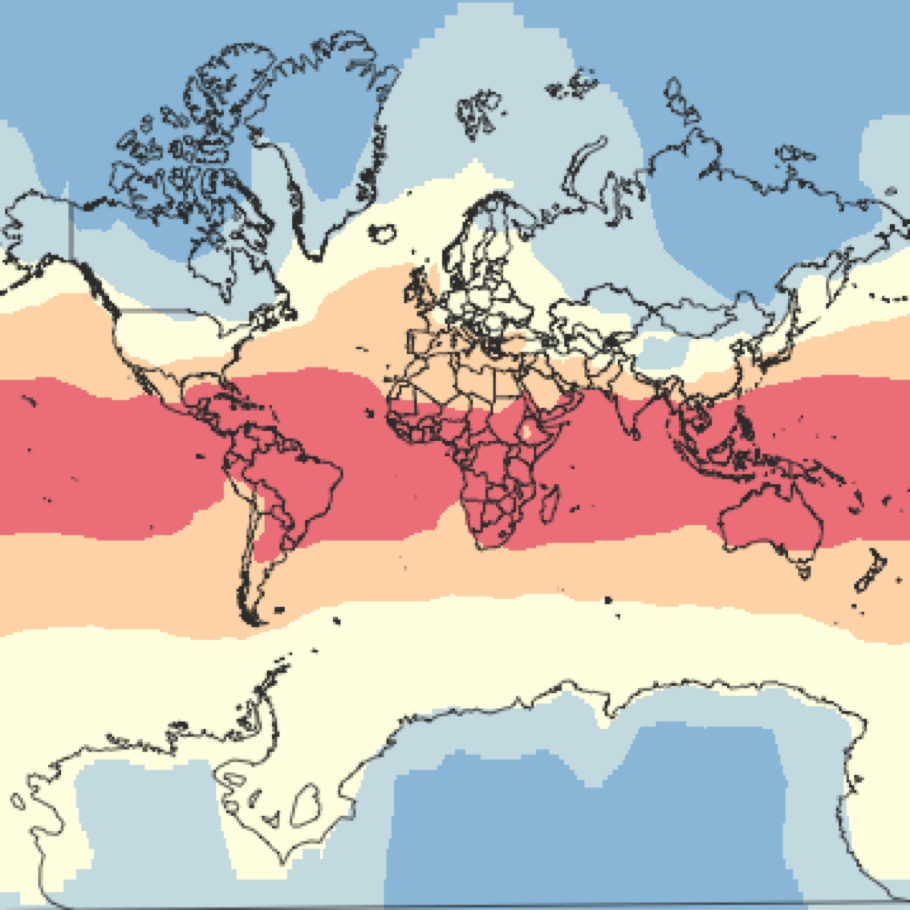
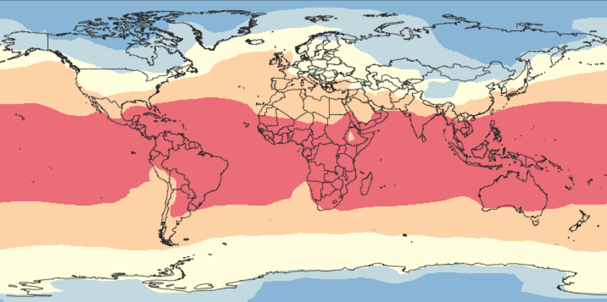
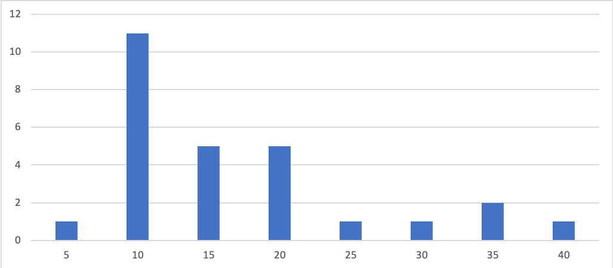

Are easy to make and use
Mashup data
Look cool
Help make meaning from data
120 MTurk Participants
Two groups:


How much of the earth's surface is covered by each colour?
Which pollutant is most threatening?
Is pollutant A (red) more threatening that pollutant E (blue)?
Control: 17%
Mercator: 50%
Are experts any better?
Obviously, yes
Visual design matters
Use static
Wait for Google/ Mapbox to sort their shit out
Slides available at:
samfredlumley.github.io/mercator-pres
Links below each slide